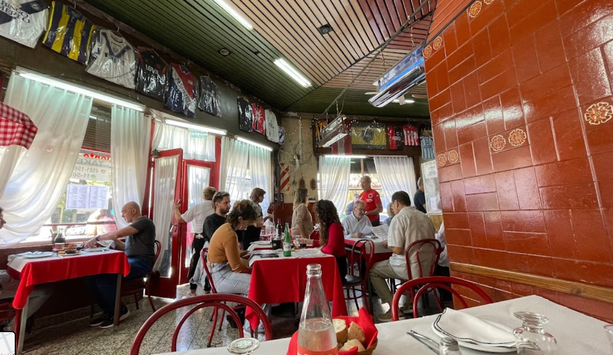
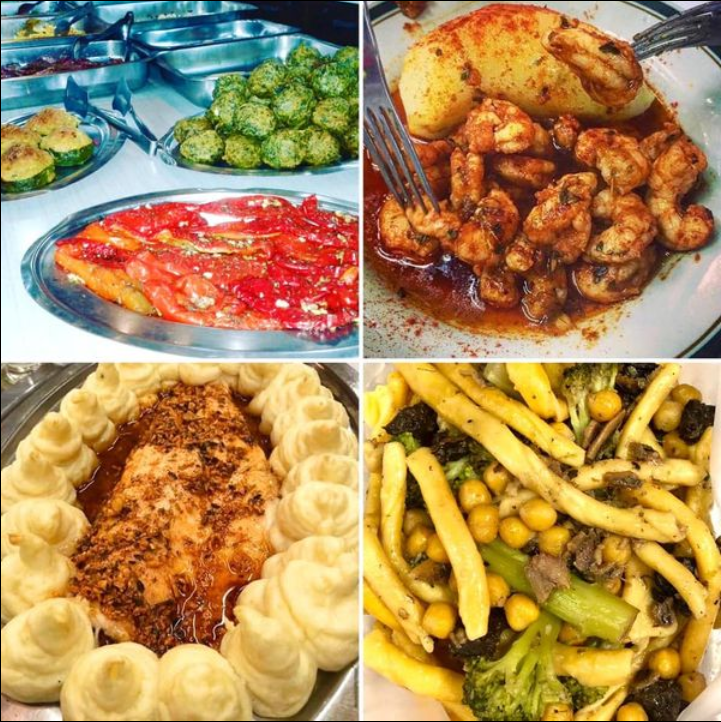
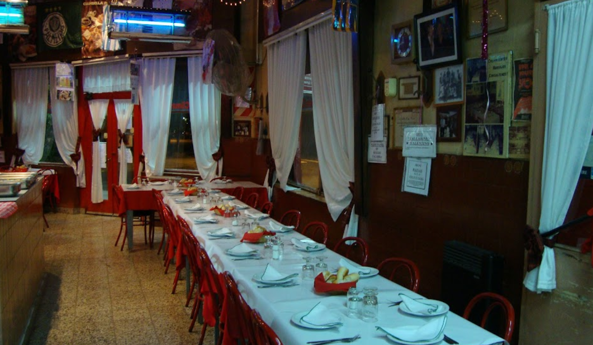
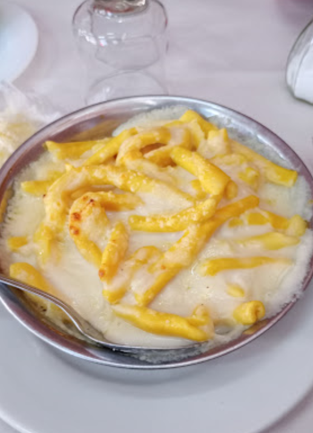
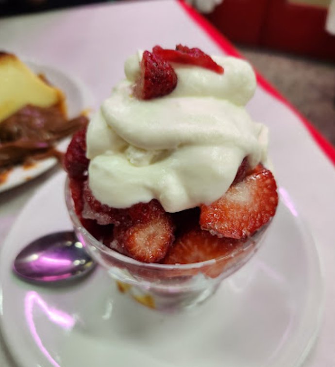
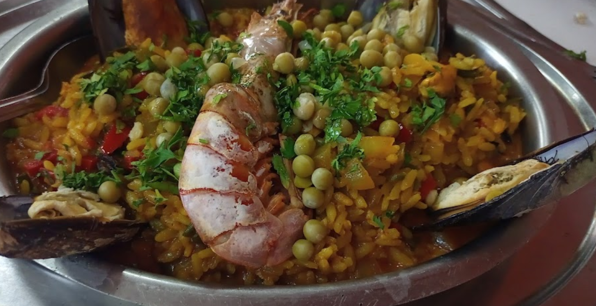
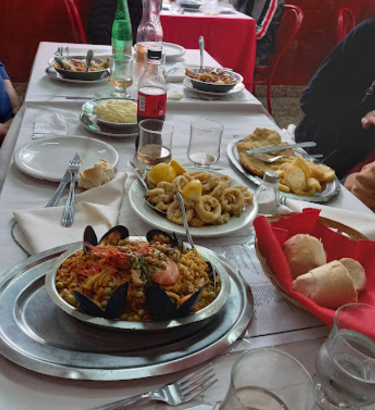
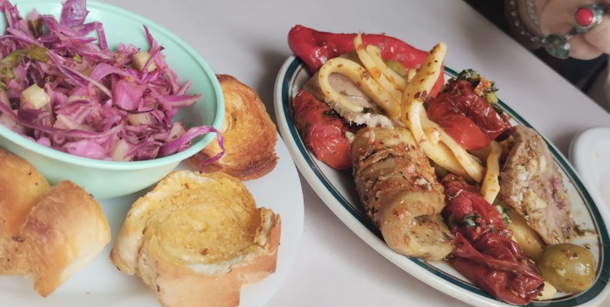
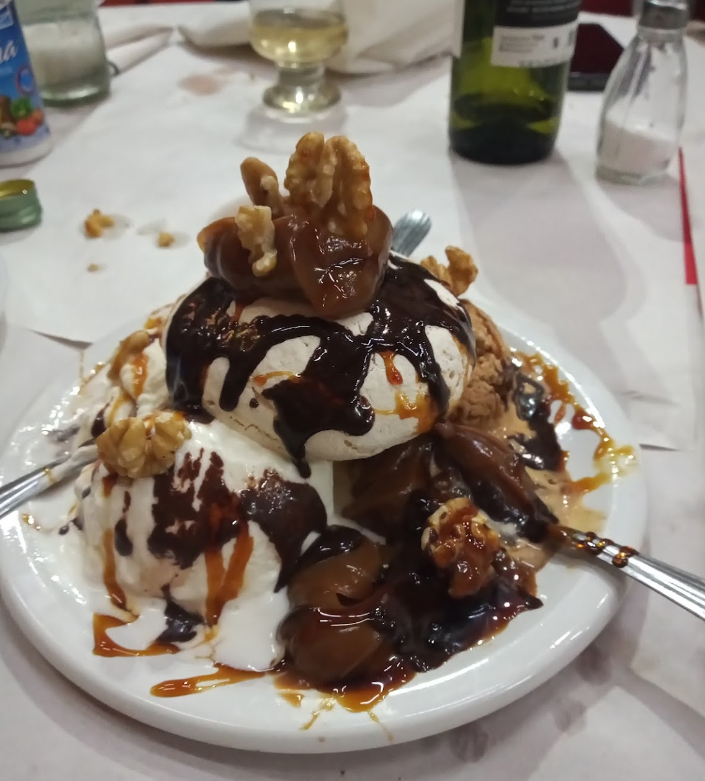

Nosotros
Somos una cantina establecida en Buenos Aires hace más de 60 años. Desde entonces, hemos estado sirviendo auténtica comida porteña con pasión y dedicación.
Nuestro objetivo es proporcionar a nuestros clientes una experiencia gastronómica inolvidable en un ambiente acogedor y tradicional.
La elegida por Pol-Ka para las mejores producciones:
- "El Sodero de Mi Vida"
- "Ilusiones"
- "Mujeres Asesinas"
Ganadora de los premios Clarín y Martín Fierro 2005.
Dirección
Camrones 1901, CABA, Buenos Aires, Argentina.
Contacto
Teléfono: 054-011-4584-1263 / 11-50-200-152
Email: cantinachichilo@cantinachichilo.com.ar
Fotos








